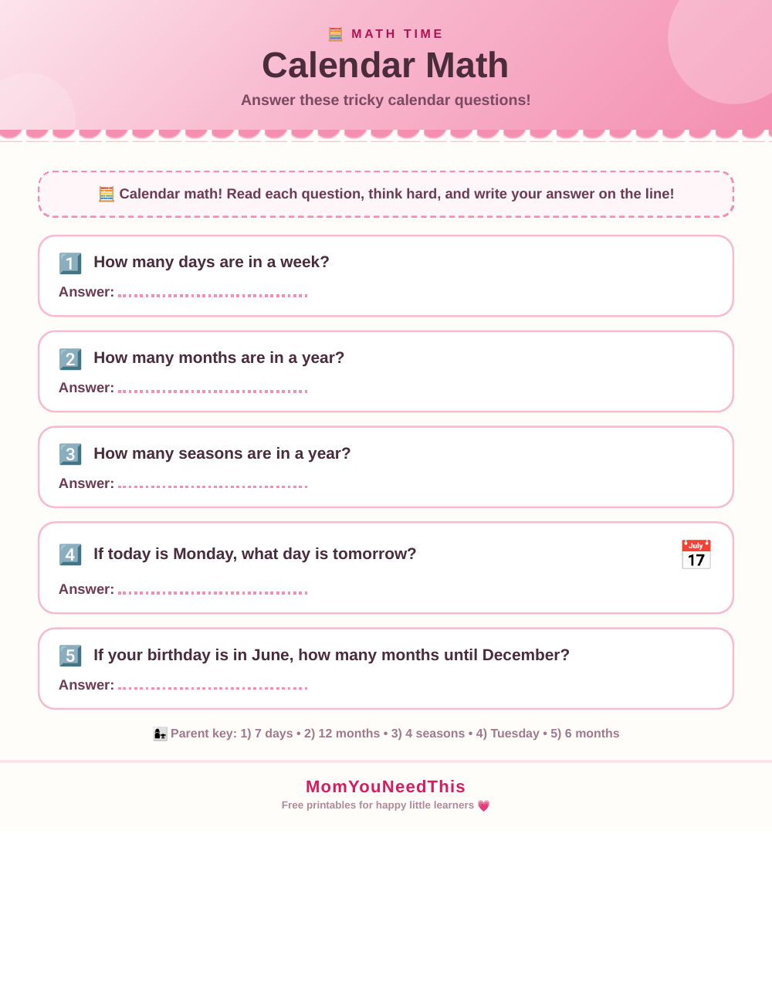

Math Activities for Preschoolers Free Printable Calendar Math for Kids
Quick Answer
These math activities for preschoolers are free printable calendar math pages designed for toddlers and preschoolers ages 2-5. The worksheet includes hands-on exercises that build early learning skills through play. Download and print at home with no signup needed — no account required, just print and start learning.
Turn calendar time into math time with these free printable calendar math activities. Little learners count days, compare numbers, and solve simple calendar puzzles while building early math skills.
➕ Calendar Math Fun
Use these activities to help your child count days, find numbers, compare more and less, and learn yesterday, today, and tomorrow with simple calendar math.
Free Calendar Math Activities

How To Use These Activities
Start by counting the days in a week or month together, then try the simple puzzles on the printable. Ask questions like how many days until Friday. Use the printable for math time or calendar time.
Why Do Calendar Math?
Calendar math sneaks real math practice into an everyday routine. Counting days, comparing numbers, and solving date puzzles build number sense in a meaningful context.
🎁 Keep Exploring Free Learning Activities
Discover more printable activities, toddler resources, and learning ideas created for busy parents.
🎁 View All Free Resources🖨️ How to Use This Printable
Get started in minutes — everything here is free and made for busy parents.
- Download the printable. Tap the download button to save the free Calendar Math Activities file to your device.
- Print it out. Use any home printer and regular paper — cardstock works great for pages little hands will use again and again.
- Learn together. Sit with your child, follow the activity, and keep it playful. Short sessions work best.
- Explore more. Check the free printables linked below for your next activity.
🧮 Math Activities for Preschoolers
These math activities for preschoolers turn calendar time into a daily math lesson. Counting days, naming months, and spotting patterns on a calendar are real math skills — and preschoolers love them. Our math activities for preschoolers are free printables you can use at home or in the classroom.
The best math activities for preschoolers are hands-on and short. Count the days together, circle today's date, and ask 'how many days until Friday?' That one question practices counting, sequencing, and number sense all at once.
Tip: make math activities for preschoolers part of your morning routine — two minutes with the calendar every day adds up to serious number confidence by the end of the month.
See calendar math printable for more.
❓ Calendar Math Activities FAQs
Is the Calendar Math Activities printable free?
Yes — every printable on MomYouNeedThis is 100% free to download and print. No signup, no payment, just tap the download button.
How do I download and print it?
Tap the download button on this page to save the file, then print it on regular paper with any home printer. Cardstock makes extra-durable pages for little hands.
What does my child learn from this activity?
Calendar math builds counting, number comparison, addition with small numbers, and problem solving. It also teaches yesterday, today, and tomorrow.
What math activities for preschoolers work best?
The best math activities for preschoolers are short, daily, and hands-on: counting calendar days, matching numbers to objects, and simple pattern games. This page collects free printable math activities for preschoolers you can start using today.
Are math worksheets for preschool too early for toddlers?
Math worksheets for preschool are designed for ages 3 to 5, but toddlers can join in by counting pictures and pointing. Let your child set the pace — if they are having fun, they are learning.
How often should kids use preschool math activities worksheets?
A few times a week is plenty. Preschool math activities worksheets work best in short, playful sessions — five to ten minutes — so kids stay excited about numbers instead of burning out.
🔗 More Free Printables You’ll Love
Pair this printable with more free learning activities from the MomYouNeedThis library.
- 📆 Days of the Week ActivitiesLearn the seven days of the week in order.
- 📅 Calendar Learning ActivitiesExplore all calendar learning activities.
- 🔤 Alphabet Coloring PagesFree A to Z alphabet coloring printables for toddlers and preschoolers.
- 🎏 Free 5-Minute Toddler ActivitiesQuick learning activities for busy little ones.